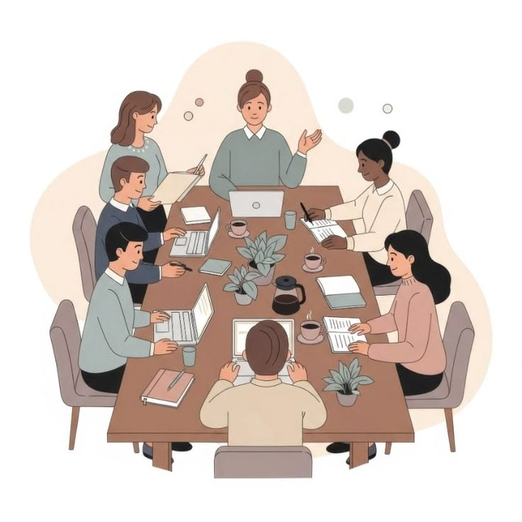
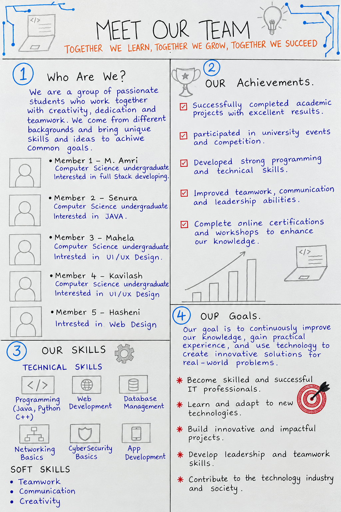

PROFESSIONAL SKILLS / INTRODUCTION
Introduction & Team Building
Meet Our Team: the beginning of my learning journey.

Overview
Our introductory session explored why professional skills matter alongside academic knowledge, introducing communication, teamwork, leadership, and creativity.
Learning outcomes
- Understand the importance of professional skills alongside academic knowledge.
- Develop communication, teamwork, leadership, and creativity.
- Share ideas and respect different opinions while working towards a common goal.
Activities
In groups, we created a handmade portfolio titled Meet Our Team. We introduced our members, their interests, technical skills, achievements, and future goals. Everyone shared ideas and worked together to complete the poster.
My reflection
This activity helped me understand the importance of teamwork, communication, and creativity. I learned how sharing ideas and respecting different opinions can help a group achieve a common goal. It was an enjoyable beginning to my Professional Skills journey.
Meet Our Team poster
Our team members, shared skills, achievements, and future goals, brought together in the poster we created for the introductory activity.

